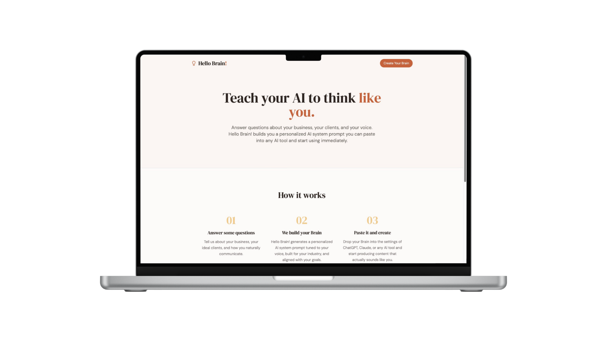

Hello Brain

The Challenge
I started noticing a pattern. Real estate agents and solopreneurs were spending hours researching AI tools and following every tip they found online, but they weren't actually setting themselves up for success. The problem wasn't the tools. It was that no one was helping them figure out how to teach an AI tool to work like them first.
AI gets more useful the better it understands how you think, communicate, and make decisions. But getting that context into an AI system is messy and difficult to structure. Most people either skip it entirely and wonder why their AI outputs don't sound right, or they spend hours typing out rambling descriptions that don't actually work.
What I Did
I built Hello Brain as a guided questionnaire that does the work most people avoid. It asks the right questions in the right order, so users articulate how they actually think and work instead of creating noise. That structured reflection becomes a personalized AI system prompt they can immediately drop into ChatGPT, Claude, or any AI tool.
The work spanned product definition, questionnaire architecture, content writing, generation logic, testing, and the technical build. I used AI-assisted development throughout, partly because building a tool about AI felt like the right approach, and partly because it forced me to understand the actual limitations and possibilities of what I was building.
Outcome
Hello Brain is live at gethellobrain.com. Users answer the questionnaire once and get something they can actually use instead of having to figure out how to communicate all that context themselves every single time.
I'm also building industry-specific guides (real estate, accounting, others to come) that use the same framework. The Real Estate AI Guide shows agents how to think about AI capabilities and implement them in their workflows, with Hello Brain as the foundational setup step.
The bigger insight: this is a system that works across industries because the problem is the same everywhere. People need a clearer way to set up their tools before they try to use them.